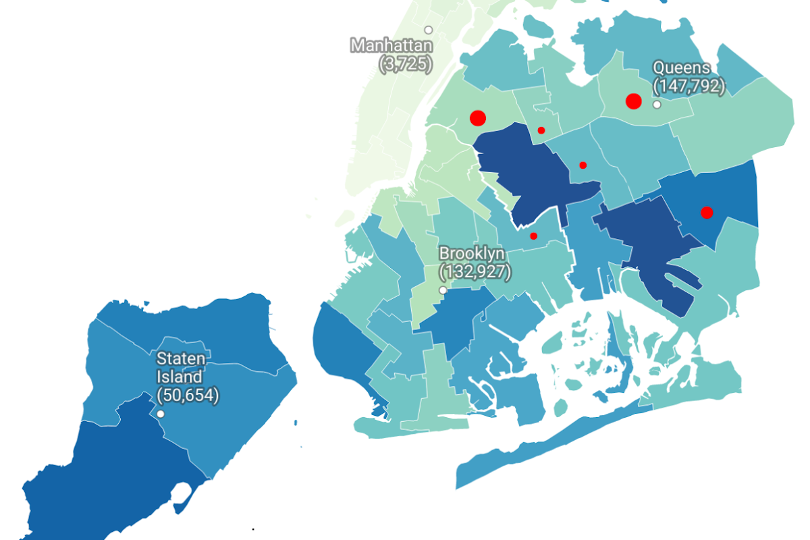

eva wen
qian-hui
I'm a
Mandarin-English
bilingual
data journalist
interested in
investigating immigration
Journalism

Basement residents and NYC regulations, one year after Ida
Mixed-status Latinx families in SC, and the state's Professional Licensure Ban
The Airbnb ban, for Black homeowners and generational equity
A small city in the South, Post Roe v. Wade
Affordable Housing Piece
Data Projects
Approval/denials for asylum appeals in 2nd Circuit, with countries of citizenship and core terms in hearing